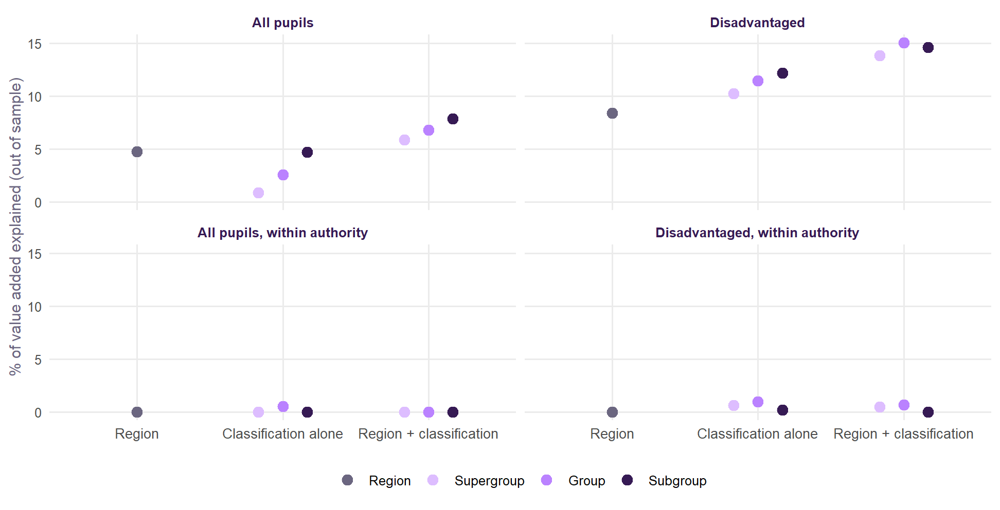
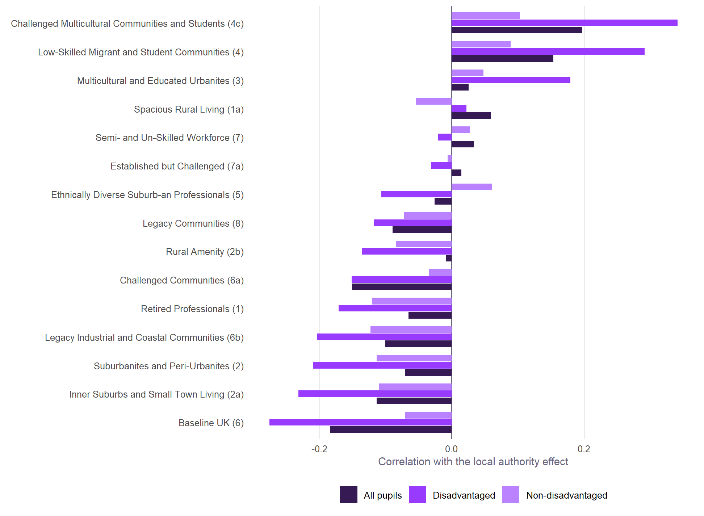
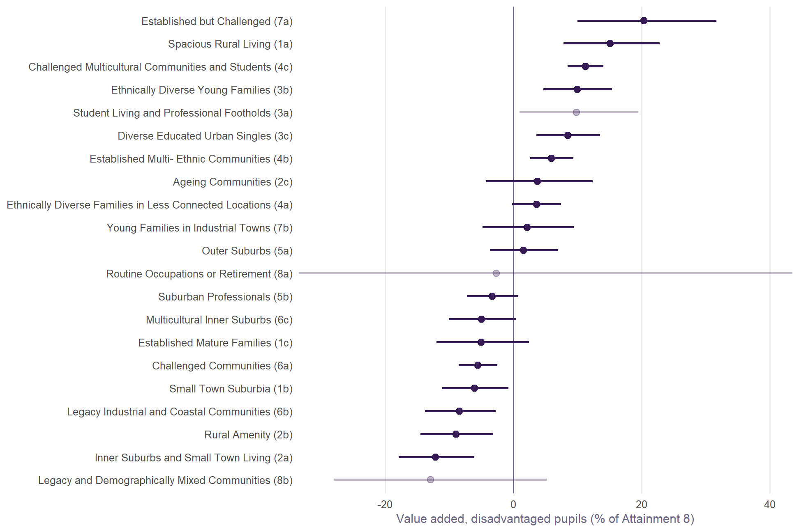

| Model | Explained (out of sample) | Gain over no neighbourhood term |
|---|---|---|
| Other v2.1 terms and region, no neighbourhood | 81.9% | +0.0 points |
| + neighbourhood education | 83.6% | +1.7 points |
| + OAC supergroup | 82.6% | +0.8 points |
| + neighbourhood education + OAC supergroup | 83.7% | +1.8 points |
| + OAC group | 83.3% | +1.4 points |
| + neighbourhood education + OAC group | 83.7% | +1.8 points |
| + OAC subgroup | 83.5% | +1.6 points |
| + neighbourhood education + OAC subgroup | 83.8% | +2.0 points |
Neighbourhood types
Is there more to a school’s neighbourhood than its adults’ qualifications? The 2021 Output Area Classification, at all three of its tiers, tested against value added.
ImportantIn short
- For results, the classification is another way of measuring the same thing. A school’s mix of neighbourhood types reproduces the neighbourhood education term almost exactly. Used instead of it, it explains results as well. Used as well as it, it adds next to nothing.
- Within a local authority it explains nothing more about value added, at any of the three tiers. Schools that do better than similar schools in their own authority do not sit in different kinds of neighbourhood.
- Between places there is something, and mostly for disadvantaged pupils. Disadvantaged pupils do better where schools sit among multicultural, urban neighbourhoods. They do worse among the classification’s “Baseline UK”, legacy industrial and coastal, and small-town neighbourhoods. This describes the kinds of place behind the local authority effects. It does not add a new term to the model. The classification’s groups explain 11.5% of disadvantaged pupils’ value added, against 2.3% for non-disadvantaged pupils and 2.8% for all pupils.
- The multicultural lead belongs to disadvantaged pupils alone. Non-disadvantaged pupils get no such lead. The shortfall in small-town and coastal neighbourhoods looks shared, school by school, but it is weak between authorities.
- The finest tier is not needed. Groups (21 classes) find what subgroups (52) find; supergroups (8) find less.
The classification and the neighbourhoods
The 2021/2 Output Area Classification sorts every Output Area in the UK into one of 8 supergroups, 21 groups and 52 subgroups. It clusters dozens of Census variables on population, households, housing, ethnicity, migration, education, work and health. Neighbourhood education in Value Added v2.1 is one Census variable: the share of adults with degree-level qualifications.
To compare like with like, each school’s neighbourhood here is the same as for neighbourhood education: the 150 Output Areas whose centres are nearest the school. A category has no median, so each school’s neighbourhood is described by its profile: the share of those 150 areas in each class, at each tier. It is also described by how mixed they are (the entropy of the subgroup shares). 3,262 schools have both value added and a profile.
Does it explain results better than neighbourhood education?
The other v2.1 terms explain 81.9% of the variation in results. Neighbourhood education takes that to 83.6%. The classification’s subgroups on their own reach 83.5%, about the same. Adding them to neighbourhood education gives 83.8%, a gain of under a quarter of a point. The reason is that the profile is, very largely, neighbourhood education: the subgroup shares predict a school’s neighbourhood education with R² 0.90 out of sample (groups 0.85, supergroups 0.65).
Does it explain value added?
Value added is what the v2.1 model cannot explain. If the classification picked up a neighbourhood effect the model misses, it would explain some of it. The test is in two forms:
- Against England, which includes each school’s region and local authority effects.
- Within the local authority, the school’s own part only.

- Within the authority, nothing. At every tier, the classification explains about none of a school’s value added relative to its own authority, for all, disadvantaged and non-disadvantaged pupils. Schools that do better than similar schools nearby do not sit in different kinds of neighbourhood.
- Against England, something, because value added against England includes the place a school is in. For all pupils, region explains 4.8% and region with the subgroups 7.9%. Non-disadvantaged pupils are about the same, at 5.2% and 8.3%. For disadvantaged pupils the step is larger: 8.4% with region alone, and 15.1% with region and groups.
So the classification describes places, not schools within them. Local authorities, entered directly, explain 16.0% of disadvantaged pupils’ value added. The classification’s groups alone explain 11.5%, most of that. For all pupils, the authorities explain 10.8% and the groups only 2.8%. For non-disadvantaged pupils, they explain 10.6% and 2.3%.
What kinds of place

For disadvantaged pupils, authorities do better the more their schools sit among multicultural neighbourhoods:
- Challenged Multicultural Communities and Students (group 4c, +0.34);
- Low-Skilled Migrant and Student Communities (supergroup 4, +0.29).
They do worse the more their schools sit among the classification’s Baseline UK neighbourhoods (supergroup 6, -0.28), Inner Suburbs and Small Town Living (2a, -0.23) and Legacy Industrial and Coastal Communities (6b, -0.20).
For non-disadvantaged pupils the same correlations are much weaker. None goes beyond 0.12 either way (4c +0.10, 6 -0.07, 6b -0.12). The pattern between authorities is a pattern for disadvantaged pupils.
This matches what is known about where disadvantaged pupils do well: in London and other diverse cities, much less so in coastal and former industrial towns. Neighbourhood education does not capture it, because the two kinds of place can have similar qualification levels. These are correlations with authority effects. They describe the places; they do not say what about them matters.

School by school, the pure-type estimates mostly tell the same story for disadvantaged pupils. Multicultural groups (4c, 3b, 3c, 4b) sit above zero. Small-town, coastal, rural-amenity and challenged groups (2a, 2b, 6b, 1b, 6a) sit below. Two groups do not fit: Established but Challenged (7a) and Spacious Rural Living (1a) carry large positive estimates here, but show no relationship at all with authority effects. They are probably particular places rather than a pattern, and are best left aside until they can be looked at area by area.
Non-disadvantaged pupils share only one side of this. The multicultural lead is not theirs: Challenged Multicultural Communities (4c) is at +1.9% against +11.3% for disadvantaged pupils, and 3b at -5.4% against +9.9%. The small-town and coastal shortfall does appear: 6b at -8.7%, 1b at -8.2% and 2a at -6.9%. Because the correlations between authorities are weak for these pupils, treat that as a school-level estimate, with the limits below, not as a place effect.
Mixed neighbourhoods
Is it the mix rather than the type? Schools whose 150 Output Areas are more varied have slightly lower value added against England, region for region. One standard deviation more mixing goes with -0.7% Attainment 8. That is small, and is not pursued here.
Which tier?
| Tier | Classes | What it adds |
|---|---|---|
| Supergroup | 8 | Reproduces neighbourhood education less well (R² 0.65), and picks up the least of the place pattern |
| Group | 21 | Reproduces neighbourhood education well (R² 0.85); with region, captures the place pattern for disadvantaged pupils as well as subgroups or better |
| Subgroup | 52 | Reproduces neighbourhood education best (R² 0.90), and a little more of all and non-disadvantaged pupils’ place pattern; no better for disadvantaged pupils, and noisier |
Going down to subgroups adds little. The signal is in the broad kinds of place: diverse urban areas on one side, small-town, coastal and former industrial areas on the other. Those differ at the group level.
What it means for v2.1
- No change to the expectation. The classification adds nothing to results beyond neighbourhood education, and nothing to value added within authorities. There is no case for putting it in the model.
- It helps read the local authority effects. Part of why disadvantaged pupils do better in some authorities than others goes with the kind of neighbourhoods their schools serve. Far less of it does for non-disadvantaged pupils. That is a description of place, and it is where the Brighton and Hove effect and its causes belong.
- For the next Census variables. The classification is mostly education and deprivation, which the model already has. The part it adds is ethnic diversity and the urban/coastal character of a place. Census variables on those, rather than more on qualifications, are the ones worth trying.
What this cannot tell us
- A school’s neighbourhood is not its pupils’ homes. The 150 nearest Output Areas stand for the area a school serves; pupils at selective, faith and popular schools come from further away.
- The classes are bundles. Each is a cluster of many variables, so a class effect cannot say which variable matters.
- Pure-type estimates extrapolate. Few schools sit in one class alone; the shares model reads off what a school surrounded by one type would get.
- One cross-section. Profiles are from the 2021 Census and value added is averaged over 2021/22 to 2024/25.
Built by R/11_oac_neighbourhoods.R from the 2021/2 Output Area Classification (Wyszomierski, Longley, Singleton, Gale and O’Brien, The Geographical Journal).